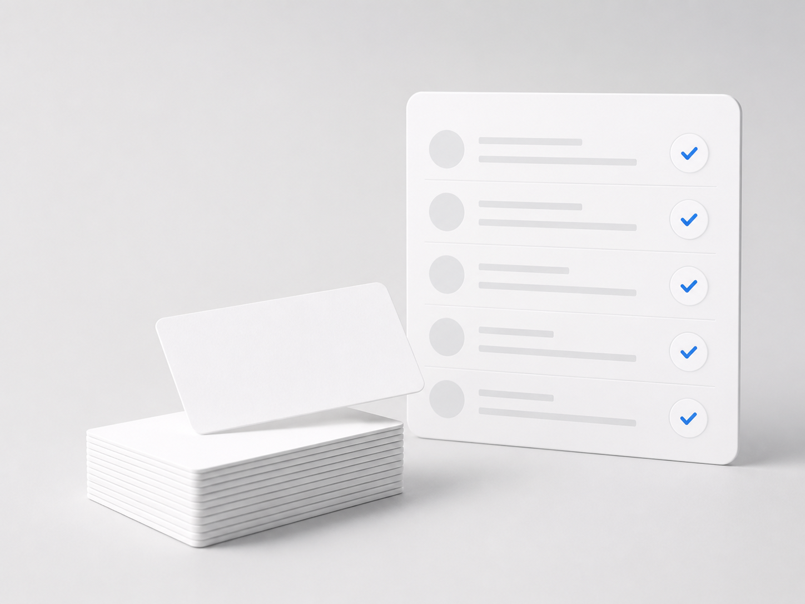

製造業 / 名刺データ納品・利用中CRM取り込み
オリエンタルモーター株式会社様
既存のSPEED AD利用ユーザーからの紹介をきっかけに利用を開始。本事例では、名刺データを翌営業日に納品し、利用中のCRMへの取り込みを翌々日に完了しました。

Overview
Flow
Benefits
Next Action
名刺データ化を起点に、次の業務へつなげたい方へ。SPEED ADのサービスをご案内します。